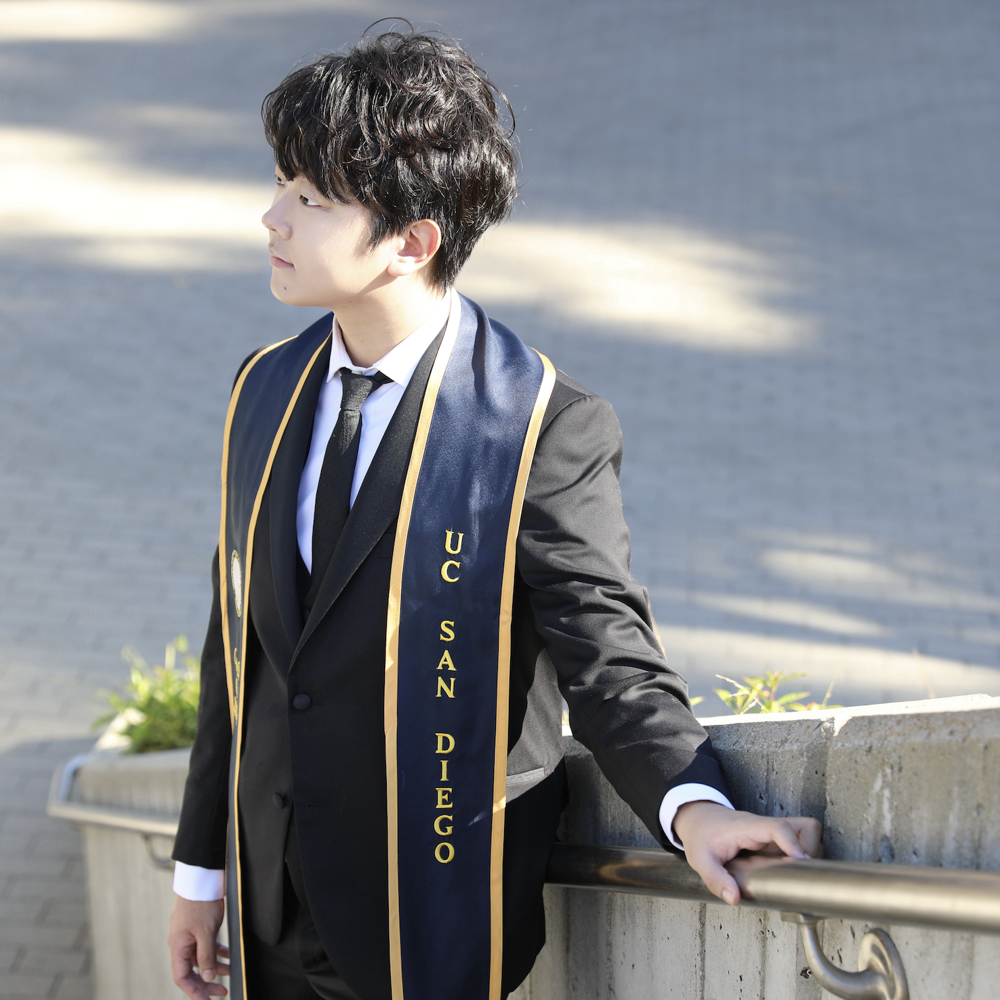

Zhexi Feng
Co-founder & CTO
Zhexi builds the app and the technology behind it. He focuses on making the experience feel steady, safe, and respectful—so it stays gentle even as it grows.
Rainbow Petopia is a private-first, returnable memorial world for pet parents. Users can save memories, write letters, and receive gentle, bounded AI replies—without denying loss.
Prototype iOS build + recorded demo. Closed pilot list confirmed; invite-only pilot launching next.
We don't claim pet revival or spiritual communication. This is a memorial/reflection experience, not therapy or medical advice.
Rainbow Petopia is a gentle world you can return to when grief resurfaces—private by default, and always at your pace.
Co-founder & CTO
Zhexi builds the app and the technology behind it. He focuses on making the experience feel steady, safe, and respectful—so it stays gentle even as it grows.

Founder & CEO
Aoki started Rainbow Petopia after losing her own beloved pet. She shapes the world and the experience with one goal: to give people a quiet place they can return to when grief comes back.

Co-founder & COO
Kuan helps turn care into real progress. He listens closely to users across the US and China, builds the early community, and makes sure what we create is something people can truly come back to.
A walkthrough of Rainbow Petopia's memorial world — the gentle interface and features designed for remembrance and reflection.